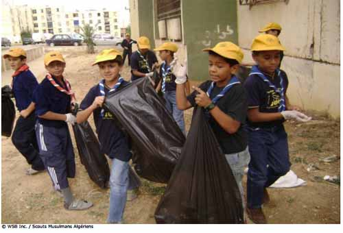

|
El reto de la bolsa de basura |
<<
Volver |

| Finalidad 4 Scouts trabajan por un mundo donde se implementan las prácticas ambientales más apropiadas. Objetivos educativos: Reconocer cómo estamos conectados con el ambiente y cómo tomar decisiones informadas sobre nuestras acciones de tal manera que podamos minimizar el impacto en el ambiente. Identificar mejores prácticas ambientales en tu comunidad. Demostrar cómo soluciones locales pueden impactar temas globales. Edad: Tropa Resumen: Un juego divertido para pensar sobre residuos y cómo se pueden reducir. |
|
| Objetivo: Motivar a pensar sobre
los residuos que generamos, lo que puede reciclarse y cómo reducir lo
que desechamos. Materiales y equipo: Bolsas plásticas, selección de residuos (limpios y seguros) Preparación: Prepare los residuos Duración: Treinta minutos Lugar: Lugar de reunión Antecedentes: La sociedad humana genera muchos residuos. Estos residuos podrían ir a un relleno sanitario, ser incinerados o simplemente tirados a un botadero al aire libre y dejarse deteriorar. Lo que le pasa a estos residuos causa un problema para el ambiente. Necesitamos reducir la cantidad de residuos que producimos. Esto se puede hacer al seguir el procedimiento de las cinco ‘Rs’: Rechazar – por ejemplo, empaques innecesarios, volantes, materiales promocionales, bolsas plásticas Reparar – ropa, equipo eléctrico, etc. Reducir – elegir productos que tienen menos empaque, utilizar solo lo que necesitamos Reusar – comprar productos de segunda mano, donar a tiendas de productos de segunda mano Reciclar – comprar productos que se puedan reciclar y reciclarlos |
|
| Guía paso a
paso de la actividad 1. Divida al grupo en equipos y deles a cada equipo una bolsa de basura. 2. Explíqueles que el objetivo del juego es disminuir el contenido de la bolsa de basura tanto como sea posible en un periodo determinado de tiempo. Esto se puede hacer al separar los residuos y decidir cómo disponer de ellos de forma diferente. Pida al grupo que piensen lo que podrían hacer para reducir el contenido de la bolsa de basura. 3. Después de cinco minutos pida a cada equipo que explique por qué removieron ciertos objetos de sus bolsas y dónde los van a poner si no los ponen en la basura. Ellos deberán explicar también qué harían de forma diferente – deberían identificar que algunas cosas pudieron rechazarse y que podrían comprar cosas con menos empaques o empaques que son reutilizables o reciclables. 4. El equipo ganador es el que tenga la bolsa de basura más pequeña al final. |
|
| Evaluación 1. Discuta la actividad e introduzca las cinco ‘Rs’ de los residuos. ¿Qué piensan los Scout sobre estas ideas? ¿Qué hacen ellos en la actualidad? ¿Qué sería factible hacer? Actividades avanzadas 1. Pida a los Scout que piensen en los empaques y que traigan productos de la casa que muestran empaques que son buenos y malos para el ambiente. Ellos deberían pensar si el empaque es realmente necesario, si es reciclable, si ya es reciclado, cuánta manufactura requieren y cuánto tiempo tomará degradarse en un relleno sanitario. 2. Implementen un centro de reciclaje en su lugar de reunión. Pregunte a los Scout si ellos reciclan en casa. 3. Si no existen centros de reciclaje o de tratamiento de residuos, considere contactar al gobierno para motivarlo a que los implemente. 4. Escriba una política de manejo de residuos para su campo Scout. Piensen cómo pueden reducir la cantidad de residuos generados y cómo reutilizar y reciclar durante el campamento. © World
Scout Bureau
Rue du Pré-Jérôme 5 PO Box 91 1211 Geneva 4 Plainpalais Switzerland Tel.: (+ 41 22) 705 10 10 Fax: (+ 41 22) 705 10 20 worldbureau@scout.org scout.org Reproduction is authorized to National Scout Organizations and Associations which are members of the World Organization of the Scout Movement. Credit for the source must be given. Se autoriza a las Organizaciones Scouts Nacionales y Asociaciones miembros de la Organización Mundial del Movimiento Scout a reproducir este material, cintando en todos los casos la fuente y reconociendo los créditos de autoría. |
|
| Volver arriba | |